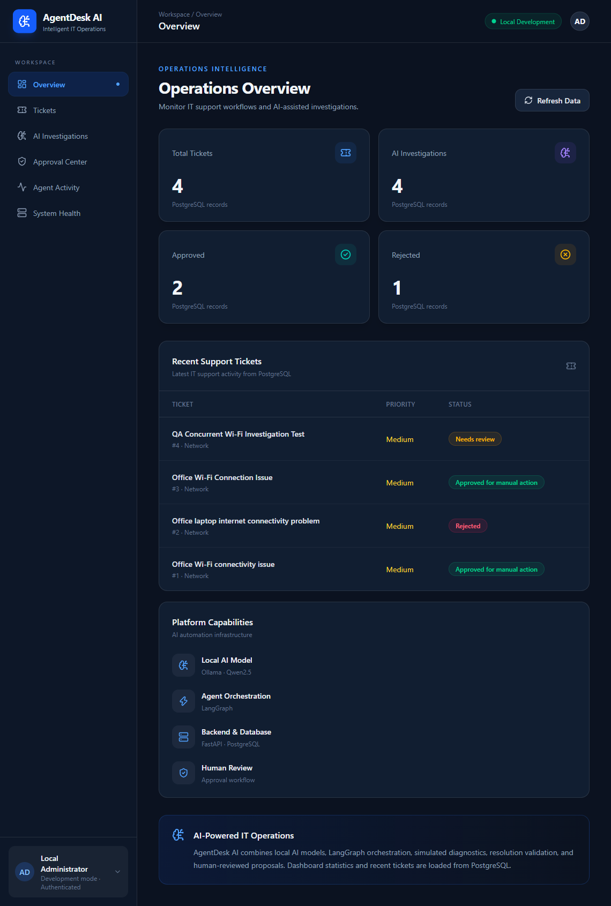

AgentDesk AI
Intelligent IT Operations Platform
Developed a full-stack AI-assisted IT support system that combines LangGraph workflow orchestration, locally hosted Ollama models, and PostgreSQL to investigate technical support tickets.
Built a React administration dashboard with AI-generated troubleshooting recommendations, rule-based validation, human approval workflows, activity tracking, and system health monitoring.
- AI ticket triage and LangGraph agent routing
- Ollama-powered troubleshooting proposals
- Simulated network diagnostic evidence
- Resolution validation and human approval
- PostgreSQL persistence and duplicate prevention
- Authenticated React dashboard and Docker infrastructure
React · Python · FastAPI · LangGraph · Ollama · PostgreSQL · Docker
Local prototype with simulated diagnostics. No automatic changes to real devices.
Request a Demo → Watch Video Walkthrough →Video quality note: YouTube may initially play this video at 240p. For a clearer view, open Settings (⚙) → Quality and manually select 720p or 1080p, if available.